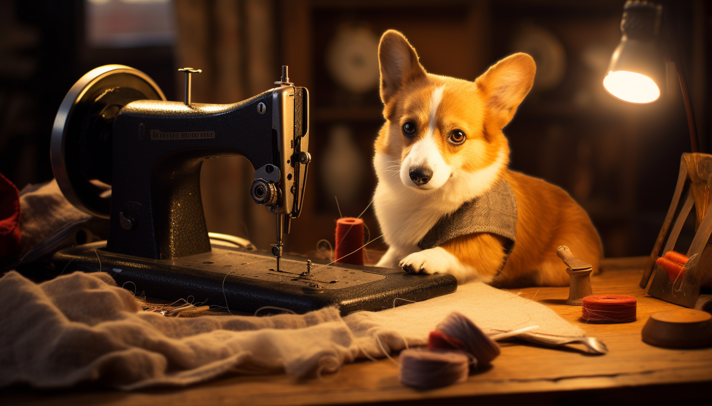
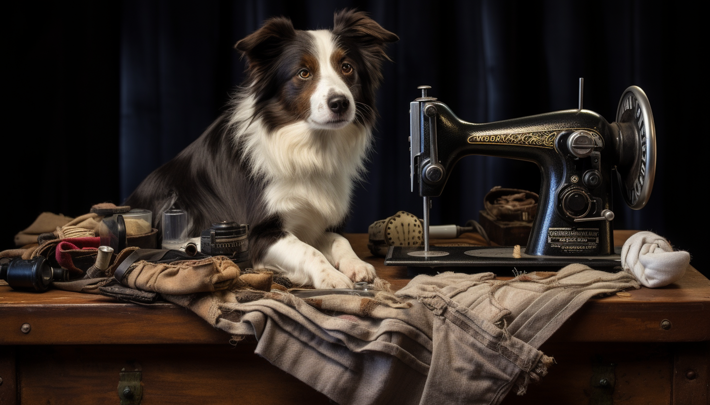

"A Kutyatartók webáruházat egy elkötelezett és szenvedélyes csapat alapította. Mi vagyunk azok, akik minden nap azon dolgoznak, hogy kutyád boldog és stílusos legyen. Engedd meg, hogy bemutassuk neked, ki vagyunk, és miért vagyunk büszkék arra, amit csinálunk."
Az indulás története
Az ötlet a Kutyatartók webáruház megalkotására egy hűvös őszi nap született. A csapat egyik tagja már évek óta kézzel készített egyedi kutyahámokat, nyakörveket és pórázokat. Mindegyik darabot gondosan tervezte és elkészítette saját kutyája, zsömi számára. Az emberek gyakran megálltak minket sétáltatás közben, hogy megkérdezzék, hol lehet ilyen egyedi termékeket vásárolni. Ezért úgy döntöttünk, hogy elindítjuk saját webáruházunkat, hogy mások is hozzáférhessenek ezekhez a minőségi, kézzel készített termékekhez.
Az egyedi készítés művészete
A Kutyatartók csapata szenvedélyesen hiszi, hogy a kutyád is megérdemli az egyediséget és a stílust. Minden egyes termékünket szeretettel és odaadással készítjük el kézzel. Az anyagokat gondosan választjuk ki, hogy biztosítsuk a termékeink tartósságát és minőségét.
Külföldről származó alapanyagok
A minőséghez való elkötelezettségünk miatt az alapanyagokat Olaszországból szerzzük be, hogy minden egyes termékünk egy kis szeletét hozhassuk el az olasz szépségből. Ezek az alapanyagok olyan távoli helyekről érkeznek, amelyek inspirációt nyújtanak termékeink egyediségéhez.
A csapatunk
A Kutyatartók webáruház mögött egy lelkes és szakértő csapat áll. Tervezőink, varrónőink és csomagolóink mindannyian kutyatartók, akik saját kutyáikat inspirálják a munkájuk során. Szívünk a kutyákkal van, és minden termékünket olyan gondossággal készítjük, mintha a saját kutyánknak készítenénk.
Hogyan rendelj tőlünk

Rendelés a Kutyatartók webáruházban egyszerű és gyors. Böngéssz a kínálatunkban, válaszd ki a kedvencedet, és mi gondoskodunk róla, hogy kutyád stílusos és kényelmes kiegészítőkkel legyen felszerelve. Ha bármilyen kérdésed vagy kérésed van, ne habozz kapcsolatba lépni velünk - mindig itt vagyunk, hogy segítsünk. Küldj nekünk egy e-mailt a következő címre: kutyatartokwebaruhaza@gmail.com és hamarosan válaszolunk.
Köszönjük, hogy minket választottál!
A Kutyatartók csapata nevében szeretnénk megköszönni, hogy itt vagy velünk. A mi szenvedélyünk és elkötelezettségünk az, ami minden egyes termékünkben megtalálható. Reméljük, hogy hamarosan visszatérsz hozzánk, hogy újabb egyedi kiegészítőket találj kutyád számára.
A Kutyatartók Webáruháza - Ahol a kutyák stílusosak és boldogok!